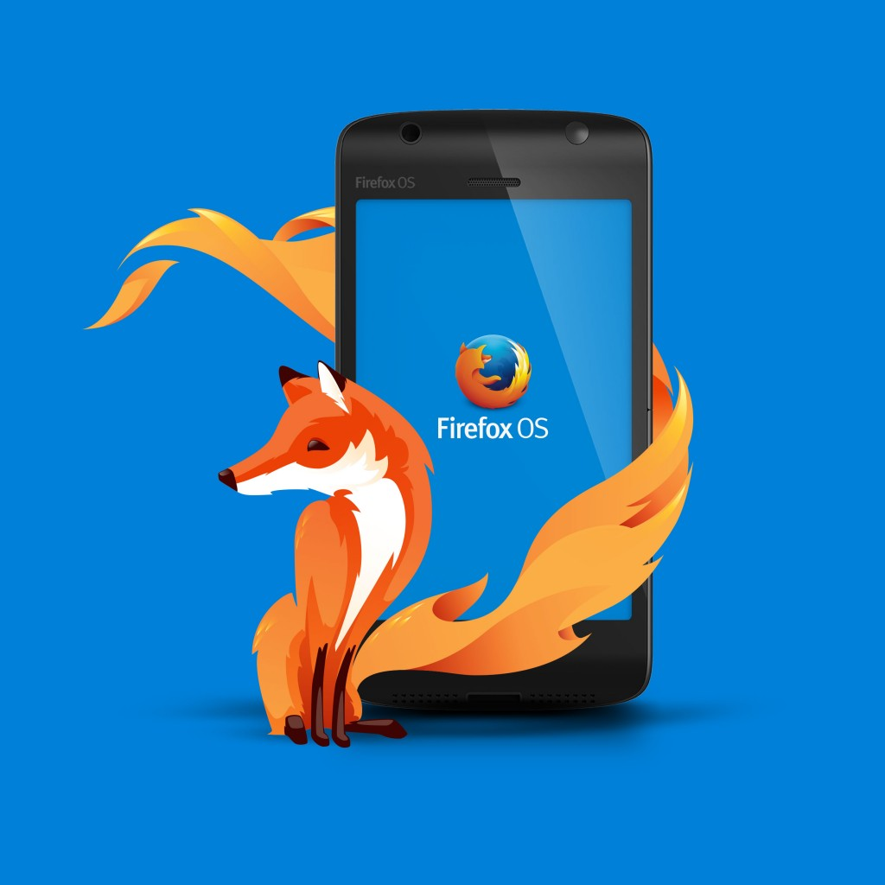

展訊通訊 (Spreadtrum) 針對 Firefox OS 的 US$25 價位智慧型手機，提供首款適配晶片
【2014 年 2 月 23 日，西班牙巴塞隆納訊】以推動網路、平等、開放為宗旨的美商謀智 (Mozilla)，將於 2014 全球行動通訊大會 (MWC 2014) 首度向全球揭櫫 Firefox OS 開放行動生態系統推廣成果，並公佈7 款全新可供銷售的 Firefox OS 行動裝置。繼原有 18 家電信營運商夥伴，今日更有印尼的 Telkomsel 與 Indosat 兩大電信商，全球已有 21 家電信廠商支援 Firefox OS。隨著來自合作夥伴的奧援不斷增加，以及持續強化的平台特色，預計 Firefox OS 將進一步拓展歐洲與南美洲等 12 個新巿場。

隨著更多合作夥伴加入 Firefox OS 陣營，加上更多樣的產品與新巿場開發，Firefox OS 所創造的行動熱潮將再創高峰。
多家廠商陸續加入銷售行列並提供支援服務
搭載 Firefox OS 的行動裝置自 2013 年全球通訊大會首度亮相後 ，Firefox OS 已有 3 家製造商生產相關裝置，並透過 4 家電信營運商現身於全球共 15 個市場之中。Firefox OS 將在 2014 年投入 12 個重要新市場：Telefónica 所擬定 Firefox OS 手機的新銷售清單，已預定在今年加入包含阿根廷 (Argentina)、哥斯大黎加 (Costa Rica)、厄瓜多 (Ecuador)、薩爾瓦多 (El Salvador)、德國 (Germany)、瓜地馬拉 (Guatemala)、尼加拉瓜 (Nicaragua)、巴拿馬 (Panama) 等 8 個國家。Deutsche Telekom 則將添增克羅埃西亞 (Croatia)、捷克共和國 (Czech Republic)、馬其頓 (Macedonia)、蒙特內哥羅 (Montenegro) 等 4 個新市場。
值得注意的是，Firefox OS 又再度獲得更多電信廠商支援，來自印尼的 Telkomsel 與 Indosat 兩大電信營運商皆宣佈加入支持 Firefox OS 的行列。加上已在列的 América Móvil、China Unicom、Deutsche Telekom、Etisalat、Hutchison Three Group、KDDI、KT、MegaFon、Qtel、SingTel、Smart、Sprint、Telecom Italia Group、Telefónica、Telenor、Telstra、TMN、VimpelCom 等多家營運商，目前全球已共有 21 家重要的電信營運商支援 Open Web 裝置。
新型態入門款智慧型手機 為成長驅力
身為 Open Web 重要盟友的展訊通訊 (Spreadtrum)，另為 Firefox OS 發表 WCDMA 與 EDGE 的關鍵參考平台裝置 (Reference device)，並針對 $25 美金價位的智慧型手機，提供業界首款適配晶片 ─ SC6821。此一產品將重新定義入門款智慧型手機，並順利進軍重要目標市場。目前已有如 Telenor、 Telkomsel、Indosat 等多家全球電信商，及包含 Polytron、T2Mobile、中科創達 (Thundersoft) 在內的行動裝置合作夥伴表達高度興趣。
國際數據資訊 (IDC) 巿場調查公司行動研究部門副總經理 John Jackson 指出：「在短短 6 個月內，Firefox OS 就完成自己對各市場所設定的目標。而根據今日宣佈的結果，我們發現此平台已快速成熟，整個生態系統也具有蓬勃成長的優勢。新的產品、工具、類別、合作夥伴、功能、具高度競爭力的價格等，都將繼續強化 Firefox OS 在 2014 年的發展動力。單就智慧型手機類別來看，IDC 看好 Firefox OS 數量將成長為去年同期的 6 倍。」
靈活度與自訂性 協助合作夥伴提供最佳服務
Firefox OS 是首款完全以 Open Web 標準所打造的裝置，各項功能均開發為 HTML5 架構的 App。Mozilla 展現其絕佳的彈性、可調整性、強大的自訂特色，將讓消費者、開發者、業界夥伴確實設計出自己想要的行動經驗。營運商更能輕鬆自訂 Firefox OS 的介面並開發本地化服務，滿足客戶的專屬需要。
Deutsche Telekom 目前正利用此自訂的特色，為「Future of Mobile Privacy」專案開發出新的 Firefox OS 功能，並透過 Mozilla 的鼎力襄助，針對行動裝置設計出兼顧使用者隱私的高效率功能。透過與 Mozilla 隱私權團隊過去 1 年的合作，我們已構思出更全面的概念並開發新的隱私權選項進行測試，即將現身於 Firefox OS 未來版本中。
隨著合作夥伴與貢獻者正針對電視、平板電腦，以及更多其他行動裝置進行軟體最佳化，Firefox OS 勢必將拓展到更多樣規格的產品中。甫於今年 1 月宣布於 Mozilla 合作的松下電器 (Panasonic)，其推出的新一代智慧電視 (Smart TV) 即將搭載 Firefox OS。
Mozilla 營運長 Jay Sullivan 另外表示：「Firefox OS 的現身即讓人驚豔不已。我們在去年 7 月發表了首款智慧型手機，現已擴展到 15 個市場之中。而東歐與拉丁美洲已有許多人迫不及待將功能型手機換成 Firefox OS 智慧型手機，開始接觸到更全面的 Web 以及更豐富的 App。我們在這些地區的銷售遠遠超出原本預期。然而，2013 年只是個開端，我們在 2014 年將提供截然不同的使用者經驗，同時合作夥伴也將提供更多樣的裝置。我們正打算提供訂價約在 25 美元的新款智慧型手機，讓世界上更多人能夠悠遊網海。」
組成 Open Web Device 審查委員會 簡化並加速 Open Web 相關支援程序
由於Mozilla 已收到許多行動製造商傳達高度興趣，並希望能自行生產 Firefox OS 手機與平板電腦以進行差異化。Mozilla 為滿足其相關需求並催生行動裝置的新一波成長，特別提供嶄新合作夥伴自助首頁 (self-service partner portal)，以快速進行製造商追蹤，加速裝置上市流程。製造商並可從單一窗口取得發表 Firefox OS 裝置時所須相關資源與品牌須知。
為了讓全世界看見 Open Web 生態系統的成功之處，Mozilla 與全球主要夥伴已於 2013 年底組成 Open Web Device 審查委員會 (Certification Review Board，CRB)。CRB 重點任務即是針對 Open Web 裝置設計出快速流程，以利提升 API 相容性並達到更具競爭力的效能。
合作夥伴證言
Telefónica 全球行銷長 Marieta Rivero 表示：「我們不到 8 個月之前就著手 Firefox OS 的行銷活動，從西班牙開始擴及其他拉丁美洲國家。Firefox OS 智慧型手機在這些國家中的銷售才剛展開，就成了巿場領導者。我們正推動著市場轉型，也會持續努力拓展開放環境。讓客戶擁有更高的自由度，並配合大眾需求提供更親民的價格。2014 年無疑是關鍵性的一年。」
Deutsche Telekom 產品與創新主管 Thomas Kiessling 則指出：「目前不斷開展的歐洲市場，足以證明我們與 Mozilla 攜手推廣 Firefox OS，以及介紹開放作業系統給客戶的用心。除了價格更平民的裝置之外，我們也會兼顧較高階的型號，進而觸及更多樣的市場客層。」
挪威領導電信廠商 Telenor 的行動裝置與作業系統部門副總裁 Holger Hussmann 指出：「Telenor 與其營運業務均已獲得消費者正面肯定。我們更將持續提供 Firefox OS 所打造的平民價位、高品質的產品，隨時滿足市場需要。只要能協助供應商與製造夥伴，繼續在這個充滿機會的處女地市場打拼，我們樂意提供所有必要服務。」
Telkomsel 行銷總監 Alistair Johnston 表示：「Telkomsel 將透過 Mozilla 合作夥伴－展訊通訊的關鍵解決方案來全力支援 Mozilla，並且期待將智慧型手機帶給每一個印尼人以順利體現 Telkomsel 的策略，以加快並豐富在印尼的 DNA (Device – Network – Application) 生態系統。
Indosat 董事長兼任 CEO Alexander Rusli 表示：「Indosat 身為印尼的領導電信營運商，現將透過展訊通訊的解決方案來提供 Firefox OS 智慧型手機。我們 2014 年的策略，就是要為客戶提供最佳的使用經驗，並成為智慧型手機與裝置客戶的首選廠商。」
Polytron 為印尼行動裝置領導品牌，其執行長 Mr. Hariono 也強調：「Polytron 將以展訊通訊的最新解決方案為基礎，支援 Firefox OS 智慧型手機的製造、分配、推廣等業務。」
T2Mobile 為專門負責 Firefox OS 行動解決方案的 ODM 領導廠商，該公司執行長 Aaron Zhang 表示：「針對無線生態系統的客戶，T2Mobile 將專責且迅速的滿足其需求。這些解決方案可進一步提昇新款 Firefox OS 與 Open Web 裝置的速度，我們很高興能支援這些新產品。」
中科創達 (Thundersoft) 為領導全球的技術與解決方案供應商，專門協助 OEM 廠商加速開發高品質產品，以快速切入市場達成獲利。該公司執行長 Hongfei Zha 表示：「我們很高興看到 Firefox OS 所帶來全新且經濟實惠的多種可能。公司也將隨著既有支援 Firefox OS 的服務，持續 拓展到新領域，針對行動網路裝置產業與生態鏈，提供獨特且絕佳的嶄新方案。」
更多 Mozilla at MWC 2014 相關訊息
Mozilla 展區資訊：西班牙巴塞隆納 Fira Gran Via, Hall 3, Stand 3C30
了解更多 Mozilla 在 MWC 的內容：http://www.mozilla.org/en-US/mwc/
即時 Mozilla 訊息，請參閱美商謀智部落格：http://blog.mozilla.com.tw/main
最新 Mozilla 新聞發佈，請參閱美商謀智新聞室：http://blog.mozilla.com.tw/press